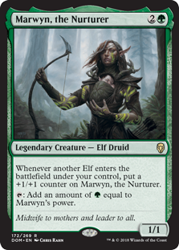
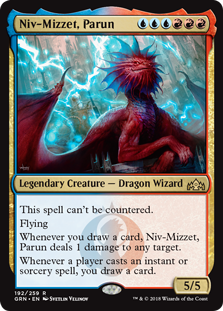
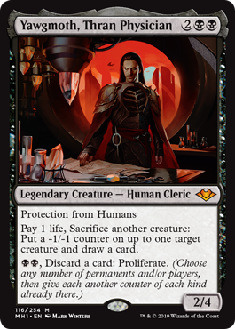
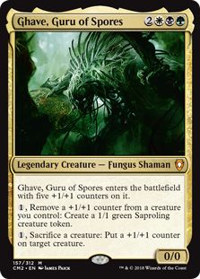
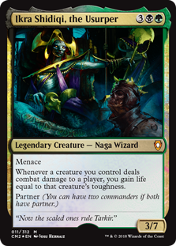
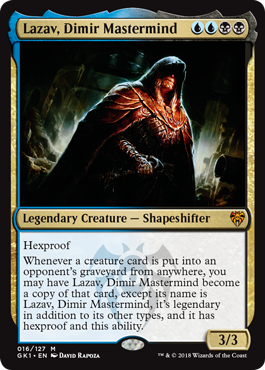

Who should your commander be?
Magic the Gathering has tons of differnet legendary creatures for players to chose from. With so many choices it can be somewhat difficult for players to pick one, to help decide on which one to pick, below are a number of the most popular deck archetpyes in commander, with what colors the archetpyes are usually in and commanders that fall under that archetpye.
Tribal
Tribals decks are decks that are centered around one creature type, and usually you will want to choose a commander that provides some form of value from playing that creature type. The deck is also going to be filled with other ways for your chosen creature to get stronger. There are a ton of different tribes for players to choose from and a tribal deck can be played in any color combination. Some examples of tribal commanders would be: | Marwyn, the Nurturer| Krenko, Mob Boss| The Ur Dragon| Gishath Sun's Avatar|
Spellslinger
Spellslinger decks are decks that focus on the card types, instants and sorceries by getting incendetal value from casting them. Usually these decks will have significantly less creatures than others, but make up for it by drawing more cards and casting powerful instants and sorceries. Commanders that fall under this archetype are usually in the colors of red or blue. Some examples of spellslinger commmaders would be: |Niv-Mizzet, Parun| Melek, Izzet Paragon| Elsha of the Infinite| Sevinne, the Chronoclasm|
Aristocrats
Aristocrat decks are decks that benefit heavily from sacrificing their own creatures to get some kind of value from their death. These decks are filled with creatures that have leave the battlefield and death triggers, and will also be filled with ways to sacrifice these creatures. Commanders that fall under this archetype are usually in the the color black. Some examples of Artistocrats commanders would be: |Yawgmoth, Thran Physician| Teysa Karlov| Shirei, Shizo's Caretaker| Korvold, Fae-Cursed King|
Tokens
Token decks are decks that focus on generating a large number of token creatures, and then overwhelm their opponents with the massive number of creatures. These decks are going to be filled with spells that generate tokens, ways to buff up those tokens, and ways to increase the number of tokens being made. Commanders that fall under the token archetpye can be found in almost any color combination. Some examples of token commanders would be: | Ghave, Guru of Spores| Slimefoot, the Stowaway| Ghired, Conclave Exile| Temmet, Vizier of Naktamun|
Life Gain
Life Gain decks are decks that focus on getting an incredibly large amount of health, and be able to outlast your opponents by having such a higher life total. These decks are going to be filled with ways to drain your opponent's health, increase your health, and tons of removal spells to deal with your opponents threats. Commanders that fall under this archetpye are usually in the colors of white or black. Some examples of commanders that fall under the life gain archetype are: | Ikra Shidiqi, the Usurper| Oloro, Ageless Ascetic| Oloro, Ageless Ascetic| Licia, Sanguine Tribune|
Mill
Mill decks are decks that try to put the cards from other player's libraries into their graveyard. These decks are going to be filled with creatures and spells that require players to discard cards and put cards directly from their library into their graveyards. Commanders that fall under this archetpye are usually gonna be in the colors blue and black. Some examples of commanders that fall under this archetpye are: | Lazav, Dimir Mastermind| Phenax, God of Deception| Syr Konrad, the Grim| Oona, Queen of the Fae|